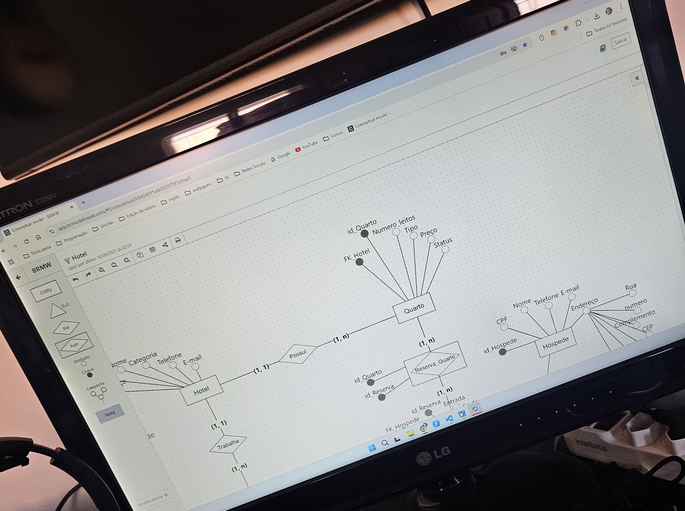

Site Super Mario
Criei um site sobre a história do super mario para praticar tudo o que eu aprendi de html e css
Trabalho Lógica de Programação e Algotimos - Faculdade
Neste trabalho era para criar algoritmos em 4 questões referente ao que foi ensinado nas aulas. Na primeira questão foi pedido para criar um app de vendas e implementar os descontos, na segunda questão foi pedido para desenvolver um app de vendas para uma loja que vende Açaí e Cupuaçu, na terceira questão foi pedido para desenvolver um sistema de cobrança de serviços de uma copiadora e desenvolver a interface com o funcionário e por último na questão 4 foi pedido para desenvolver um software de gerenciamento de livros.

Trabalho Banco de Dados - Faculdade
Neste trabalho foi pedido duas etapas, a primeira era para criar um modelo conceitual de uma rede de hotéis onde eu teria que implementar entidades, atributos, relacionamentos, cardialidades, chaves primárias e estrangeiras. A segunda etapa era para implementar um banco de dados de uma locadora de veículos no MySql, eu criei as tabelas com todas as chaves primárias(PK) e estrangeiras(FK) e depois populei os dados para testar o banco de dados e por fim realizei algumas consultas que foi pedido no trabalho como, uma consulta para listar a descrição, a data e o custo de todas a manutenções realizadas nos veículos e mais outras 4 consultas diferentes.
